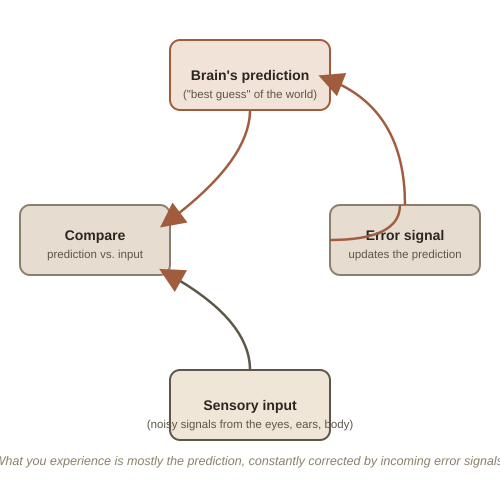

Chapter 1: A Controlled Hallucination
Look at a red apple and it feels obvious: you're seeing the apple as it actually is, red skin and all. Neuroscientist Anil Seth argues that this feeling is a kind of useful trick. There is no "red" out in the world — only a certain wavelength of light bouncing off a surface. Your brain, sealed inside a dark, silent skull with no direct access to that world, generates the experience of "red" as its best guess at what's out there. Seth's provocative phrase for this: perception isn't a window onto reality. It's a controlled hallucination — a construction, built from limited and noisy sensory data, that just happens to be tightly reined in by that data, which is what makes it useful instead of delusional.
Prediction, not detection
The dominant modern model of how the brain does this, sometimes called predictive processing, flips the intuitive picture of perception. The intuitive version: sensory data flows in, the brain processes it, and experience comes out the other end. The predictive version: the brain is constantly generating its best prediction of what's out there, and incoming sensory signals mostly just correct that prediction when it's wrong. Most of what you "see" at any moment, on this model, is actually the brain's forecast — sensory input is more like an error signal fine-tuning an ongoing guess than raw material being built up from scratch. This explains a lot of perceptual illusions: they're cases where the prediction wins out over ambiguous or unusual sensory data.

The self is also a prediction
Seth extends the same logic to the sense of having a continuous "self" at all — a much stranger claim. The feeling of being a single, stable "you" looking out from behind your eyes isn't a fixed fact the brain discovers; it's also a construction, continuously predicted and maintained, including a running model of your own body from the inside (interoception — sensing your heartbeat, hunger, breathing) as one of its core ingredients. This isn't just philosophical speculation: conditions where this modeling breaks down produce genuinely strange results — out-of-body experiences can be reliably triggered in a lab using mismatched visual and touch cues, and certain rare neurological conditions leave people fully convinced, with complete sincerity, that they are dead (Cotard's syndrome) or that a limb belongs to someone else entirely.
Metzinger's harder version: there is no self at all
Philosopher Thomas Metzinger, in The Ego Tunnel, pushes this further into genuinely unsettling territory: he argues no such thing as a "self" exists anywhere in the brain as an actual object — what exists is only an ongoing process that represents itself as having a self, a model so effective at its job that it becomes functionally invisible, mistaken for the thing perceiving rather than recognized as a representation like everything else in experience. Metzinger doesn't mean this as nihilism — he means it closer to how a smartphone's "desktop" icon isn't literally a physical folder inside the device, just a useful interface standing in for something structurally quite different underneath.
Try this
Ideas for noticing or testing this in your own life.
- Try the rubber hand illusion — it takes two people and about two minutes to find instructions for online, and gives you direct, felt evidence of how negotiable your own body-model actually is.
- Notice it during an optical illusion: next time a shape looks bigger or smaller than it measurably is, remember that's your brain's prediction winning over the raw sensory data — a small, everyday glimpse of "controlled hallucination."
Worth pulling on?
A few loose threads from this chapter — if any of these genuinely grab you, that's a good sign of where to go next.
- The rubber hand illusion takes about two minutes to trigger — stroke a visible fake rubber hand in sync with a person's real, hidden hand, and most people start to genuinely feel touch sensations coming from the rubber hand instead, and flinch when it's "attacked." A simple, repeatable demonstration of how negotiable the body's self-model actually is.
- This entire question — how a physical brain produces subjective experience at all — is what philosophers call the "hard problem" of consciousness. → Already in the library: Philosophy of Mind covers that problem directly, from the philosophical side rather than the neuroscience side covered here.
- Some meditation traditions describe, as a direct experiential goal, the exact dissolving of the self-model that Metzinger describes theoretically — a striking case of ancient contemplative practice and cutting-edge neuroscience converging on a similar description from completely different starting points.